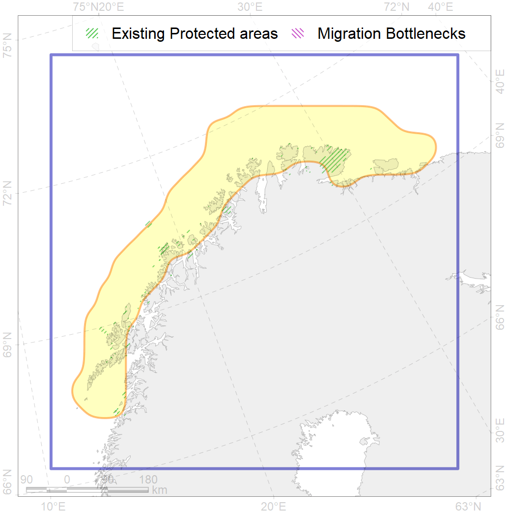
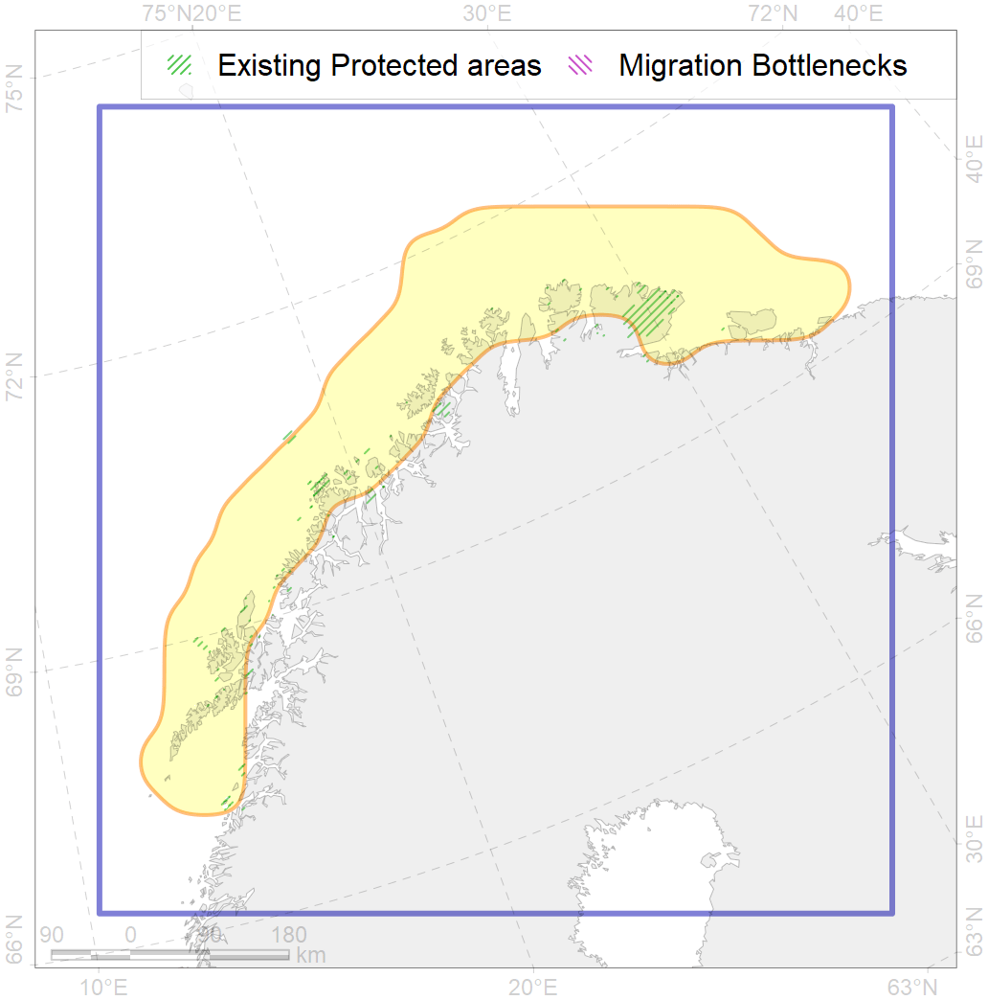

27
For more information regarding this PAC and to conduct custom spatial analysis using the PAC data or any spatial query, please consult Accenter.
 

0
CFs entirely within the PAC area
14
CFs at least 25% within the PAC area
19
CFs with at least 50% of their target achieved in the PAC
34
CFs with at least half of their target achieved in the PAC
| CF ID | CF Name | Proportion in the PAC | Conservation Target | Contribution to ArcNet Target Achievement | PAC’s Contribution to the Achieved Target |
|---|---|---|---|---|---|
| 7051 | cold corals of the Barents Sea | 76.9% | 50.0% | 137.1% | 92.1% |
| 6021 | Long-tailed duck (Clangula hyemalis) North East Atlanticwintering grounds | 75.7% | 76.8% | 92.4% | 92.2% |
| 6024 | Yellow-billed loon (Gavia adamsii) Atlantic winetring grounds | 72.0% | 43.2% | 152.7% | 92.5% |
| 4081 | Fish zoogeography, Atlantic Boreal Region, high-boreal district of the Eastern Atlantic subregion | 67.2% | 18.4% | 333.0% | 92.7% |
| 4067 | Spawning areas of the Atlantic capelin (Mallotus villosus) | 65.0% | 18.0% | 317.8% | 96.4% |
| 6070 | King eider (Somateria spectabilis) Atlantic winetring grounds | 64.4% | 36.0% | 159.9% | 93.7% |
| 7249 | seagrasses of Norway | 61.8% | 30.0% | 192.0% | 91.8% |
| 4002 | Boreal fish complex of the Barents region | 61.7% | 6.0% | 945.3% | 92.7% |
| 6068 | Common eider (Somateria mollissima mollissima) Murman and Norway wintering grounds | 56.3% | 55.2% | 90.3% | 86.5% |
| 7073 | I.1.3.1. Deep stratified fjords | 48.6% | 36.0% | 109.4% | 92.1% |
| 4066 | Feeding/nursery area of the Atlantic cod (Gadus morhua ) | 47.7% | 6.0% | 725.7% | 89.3% |
| 7234 | Kelp forests of Norway | 44.6% | 15.0% | 249.7% | 87.4% |
| 6044 | Stellers eider (Polysticta stelleri) Atlantic wintering grounds | 43.6% | 52.8% | 75.1% | 72.5% |
| 2017 | Grey seal distribution range | 26.6% | 6.0% | 370.0% | 52.0% |
| 4068 | Migration area of European Eel (Anguilla anguilla) | 23.5% | 24.0% | 90.2% | 49.3% |
| 4087 | Fish zoogeography, Arctic Region, Subarctic Transitional-Atlantic Province, Murman – Spitsbergen aquatory of the Barents District | 23.3% | 18.6% | 98.7% | 61.8% |
| 5067 | Minke whale feeding areas in the Northeast Atlantic | 21.2% | 12.0% | 145.7% | 44.9% |
| 4060 | Spawning area of the Greenland Halibut (Reinhardtius hippoglossoides) | 15.9% | 12.0% | 110.6% | 78.5% |
| 5053 | Harbour porpoise feeding areas in the Barents Sea | 13.8% | 12.0% | 90.1% | 53.9% |
| 6047 | Black-legged kittiwake (Rissa tridactyla tridactyla) breeding colonies | 13.8% | 64.8% | 19.1% | 16.4% |
| 7064 | I.1.1.1. Coastal domain in the Barents Sea | 12.8% | 7.8% | 145.4% | 20.6% |
| 7247 | seagrasses of the High Arctic | 12.5% | 30.0% | 37.9% | 20.8% |
| 5061 | Humpback whale summer feeding areas in Norway | 11.5% | 12.0% | 89.1% | 24.9% |
| 5099 | White-beaked dolphin feeding area in the Eastern North Atlantic | 11.0% | 12.0% | 60.5% | 21.8% |
| 4069 | Spawning areas of the Atlantic herring (Clupea harengus) | 10.9% | 6.0% | 157.7% | 23.7% |
| 5113 | Sperm whale summer feeding areas in Atlantic | 10.8% | 14.4% | 65.6% | 55.4% |
| 7070 | I.1.2.1. Barents western slope | 10.1% | 17.0% | 54.8% | 25.8% |
| 5051 | Fin whale summer feeding areas in Norway | 9.8% | 26.4% | 28.3% | 20.6% |
| 7231 | Kelp forests of Murmansk coast | 8.9% | 15.0% | 45.2% | 16.1% |
| 4054 | Range of the Shorthorn Sculpin (Myoxocephalus scorpius), European populations | 8.5% | 3.0% | 236.8% | 17.3% |
| 4030 | Feeding area of the Arctic charr (Salvelinus alpinus), anadromous populations | 7.6% | 38.4% | 18.2% | 15.9% |
| 6099 | Black-legged kittiwake (Rissa tridactyla tridactyla) breeding colonies buffer feeding area | 7.1% | 64.8% | 9.4% | 9.4% |
| 4027 | Feeding/migration area of the Atlantic salmon (Salmo salar) American populations | 6.7% | 20.4% | 27.3% | 18.7% |
| 4094 | Subarctic fish complex of the Barents region | 6.6% | 6.0% | 83.2% | 15.4% |
| 4057 | Range of the American Plaice (Hippoglossoides platessoides), American populations | 5.9% | 3.0% | 163.1% | 14.7% |
| 4049 | Range of the Haddock (Melanogrammus aeglefinus) | 5.5% | 6.0% | 76.4% | 12.2% |
| 6106 | Thick-billed murre (Uria lomvia lomvia) breeding colonies buffer feeding area | 5.3% | 48.0% | 9.2% | 6.7% |
| 6004 | Little Auk (Alle alle polaris) wintering grounds | 5.1% | 18.0% | 23.5% | 13.1% |
| 7067 | I.1.1.4. Shelf troughs | 5.1% | 3.0% | 137.9% | 22.1% |
| 5064 | Killer whale summer feeding areas in the North East Atlantic | 4.5% | 6.0% | 63.3% | 10.6% |
| 6049 | Black-legged kittiwake (Rissa tridactyla tridactyla) wintering grounds | 4.4% | 32.4% | 11.3% | 11.3% |
| 7069 | I.1.1.5.2. Moderate (>100 m) shelf banks | 4.2% | 7.6% | 26.2% | 23.0% |
| 7066 | I.1.1.3. Shelf plains | 3.9% | 3.7% | 98.3% | 8.1% |
| 4052 | Range of the Fourhorn Sculpin (Myoxocephalus quadricornis), American populations | 3.9% | 3.0% | 120.1% | 8.3% |
| 4046 | Range of the Thorny Skate (Amblyraja radiata) | 2.8% | 7.2% | 33.0% | 6.2% |
| 4045 | Feeding/migration area of the Pink Salmon (Oncorhynchus gorbuscha), native distribution | 2.6% | 6.0% | 35.5% | 5.8% |
| 6023 | Atlantic puffin (Fratercula arctica naumanni) wintering grounds | 2.5% | 24.0% | 7.9% | 6.4% |
| 6083 | Thick-billed murre (Uria lomvia lomvia) wintering grounds | 2.3% | 24.0% | 8.0% | 5.7% |
| 4003 | Range of the Atlantic Capelin (Mallotus villosus) | 2.2% | 3.0% | 60.9% | 5.2% |
| 7265 | Barents and Kara Sea Throughs | 1.6% | 4.2% | 27.0% | 9.4% |